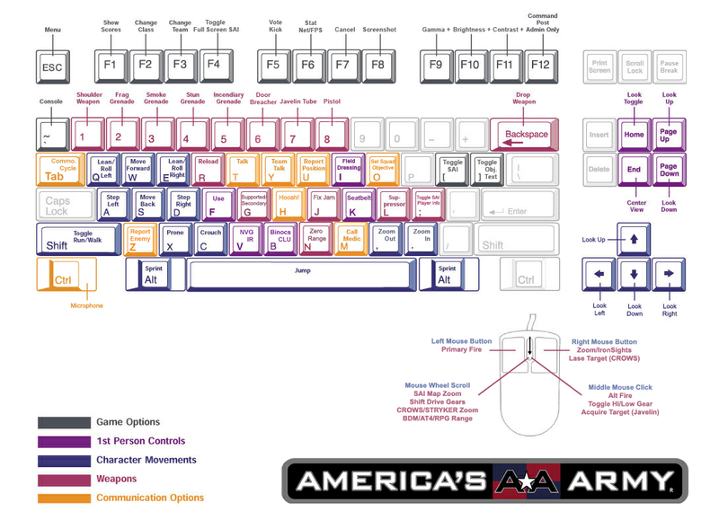

Americas Army
Dieser Artikel wurde für die folgenden Ubuntu-Versionen getestet:
Ubuntu 16.04 Xenial Xerus
Zum Verständnis dieses Artikels sind folgende Seiten hilfreich:
America's Army  (AA) ist ein kostenloses Rekrutierungsspiel der US-Army. Es basiert auf der Unreal Engine. Das Spiel soll Techniken in realistischen militärischen Aktionen trainieren. Nach einer Grundausbildung an detailgetreuen Schauplätzen können weitere Trainingseinheiten absolviert werden (Waffen-Spezialist, Ingenieur, Sanitäter, et cetera). Hat man die Einheiten als Soldat absolviert, kann man sich an Online-Missionen beteiligen. Da die US-Army die Authentifizierungsserver für America's Army 2.5 abgeschaltet hat, ist es nicht mehr möglich, mit einem offiziellen Account zu spielen oder einen neuen zu registrieren. Als Alternative kann 25Assist verwendet werden. Über den Client ist es möglich, auf die Server von Battletracker zuzugreifen. Hier werden alle Daten abgelegt und man kann die Statistiken einsehen.
(AA) ist ein kostenloses Rekrutierungsspiel der US-Army. Es basiert auf der Unreal Engine. Das Spiel soll Techniken in realistischen militärischen Aktionen trainieren. Nach einer Grundausbildung an detailgetreuen Schauplätzen können weitere Trainingseinheiten absolviert werden (Waffen-Spezialist, Ingenieur, Sanitäter, et cetera). Hat man die Einheiten als Soldat absolviert, kann man sich an Online-Missionen beteiligen. Da die US-Army die Authentifizierungsserver für America's Army 2.5 abgeschaltet hat, ist es nicht mehr möglich, mit einem offiziellen Account zu spielen oder einen neuen zu registrieren. Als Alternative kann 25Assist verwendet werden. Über den Client ist es möglich, auf die Server von Battletracker zuzugreifen. Hier werden alle Daten abgelegt und man kann die Statistiken einsehen.
| AA 2.5 Assist | Spielszene |
Installation¶
Americas Army wird über 25Assist installiert und es werden alle nötigen Patches sowie PunkBuster aufgespielt.
Von der Projektseite die Datei 25Assist-Linux.zip herunterladen und entpacken [1] z.B. nach ~/Spiele/AA2. In den neuen Ordner wechseln und die Datei 25Assist nach run25Assist umbenennen. Anschließend den Order 25Assist erstellen. Übergeht man diesen Schritt so wird das Spiel im Homeverzeichnis abgelegt.
Im nächsten Schritt wird die Installation eingeleitet [2]:
./run25Assist
Im Installer gibt man seine Zugangsdaten von battletracker.com ein und die Spieledateien werden installiert. Hat man noch keinen Zugang so kann dieser hier ebenfalls angelegt werden. Das Spiel kann über run25Assist aus dem Installationsvererzeichnis heraus gestartet [3] werden. Auf Wunsch einen Menüeintrag vornehmen [4].
Spielablauf¶
Zuerst sollte man sich mit der Steuerung vertraut machen. Nachdem man die Grundausbildung absolviert hat kann man sich an Missionen beteiligen. Für den Spielablauf ist das Honor-Level von großer Bedeutung was mit Erfahrungspunkten gleichzusetzen ist. In diesen spiegeln sich Begrifflichkeiten wie Ehre, Pflichtbewusstsein et cetera wieder. Als Rekrut startet mit mit einem Wert von 10. Erhöht werden kann er u.a. durch die Erfüllung von Missionszielen und Eliminierung des Feindes. Jedoch kann man auch Punkte verlieren, wenn man gegen die Rules Of Engagement (ROE) verstößt.
Detaillierte Informationen zum Spielablauf sind im Wiki von Americas Army zu finden.
AA 2.5 Assist¶
| AA 2.5 Assist | |
| Menüpunkt | Beschreibung |
| "SITREP" | Nachrichten und Chat |
| "INSTALL" | Programm aktuell halten, fehlende Dateien nachinstallieren und das Spiel reparieren. |
| "TRAINING" | Trainingsmissionen absolvieren. |
| "DEPLOY" | Einem Spiel (Mulitiplayer / Server) beitreten. |
| "POLLS" | Umfragen der Community |
| "HELP" | Handbuch, Tastenkürzel, Nutzungsbedingungen... |
| "STATS" | Statistiken (Spieler, Clan und Bekannte) |
| "SETTINGS" | Audio- und Videoeinstellungen ändern. |
Tastenkürzel¶
| Tastenkürzel | |
| Taste(n) | Funktion |
 | Steuerung |
| ⇧ | Laufen/Gehen |
| Alt | Laufen |
| Springen | |
| Q / E | Links / rechts lehnen |
| C | Ducken |
| X | Liegen |
| Q | Links rollen im liegen |
| E | Rechts rollen im liegen |
 | Waffe abfeuern |
 | Sekundärwaffe abfeuern / Zoom (Rad) / AI/CROWS/Stryker/Range/Shift (Rad) |
| R | Nachladen |
| B | Fernglas |
| F | Aktion |
| J | Fix Jam |
| G | Granate/Zweibein |
| 1 | Waffe wechseln |
| 2 | Handgranate |
| 3 | Rauchgranate |
| 4 | Blendgranate |
| 5 | Brandgranate |
| 6 | Türbrecher |
| 7 | Javelin Tube |
| 8 | Pistole |
| V | Nachtsichtgerät |
| M | Medic rufen |
| Z | Feind melden |
| T | Nachricht schreiben |
| ⌫ | Waffe ablegen |


Infobox¶
| America's Army | |
| Genre: | Ego-Shooter |
| Sprache: | |
| Veröffentlichung: | 2002 |
| Publisher: | U.S. Army |
| Systemvoraussetzungen: | 2.4+ GHz / 512MB+ RAM / 3.5 GB freier Festplattenspeicher / CDROM / 3D-Grafikkarte >= 128MB RAM |
| Medien: | Download |
| Strichcode / EAN / GTIN: | - |
| Läuft mit: | nativ |
- Erstellt mit Inyoka
-
 2004 – 2017 ubuntuusers.de • Einige Rechte vorbehalten
2004 – 2017 ubuntuusers.de • Einige Rechte vorbehalten
Lizenz • Kontakt • Datenschutz • Impressum • Serverstatus -
Serverhousing gespendet von